前 馬 鞍 包
兩組式的背包，有下雨天時的防水外袋，空間規劃也很方便收納。
前面的行李主要是：地圖、帳篷、雨衣、清潔用品、充電器等。
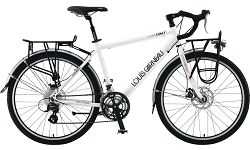 |
單 車 |
|
尺寸 : 470mm 重量 : 15.4kg 車架 : LG 6061 ALUMINUM 變速系統 : SHIMANO 煞車系統 : TEKTRO ROAD MECHANICAL DISC BRAKE |
|
前 馬 鞍 包 |
|
兩組式的背包，有下雨天時的防水外袋，空間規劃也很方便收納。 前面的行李主要是：地圖、帳篷、雨衣、清潔用品、充電器等。 |
 |
後 馬 鞍 包 |
|
兩組式的背包，大致同上面那一組背包，但是比較大一些。 後免的行李主要是：衣服、電腦、零件、工具、炊具等。 |
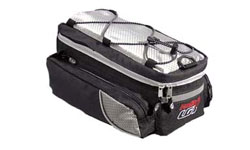 |
上 馬 鞍 包 |
|
本來是設計放在後座的包包，但是後座要綁睡袋和睡墊等東西，已經客滿。 所以就被我挪到前面去，可以放些旅行途中比較需要隨時拿的東西，比如相機。 |
 |
內 胎 |
內胎是26C的規格，氣嘴是一般的美式氣嘴，這規格比較普遍可以隨處就買到。 基本會攜帶6~8條內胎，破了就自己補，撐著點用，有補給再更換。 更換的帶Continental的內胎，他們的首頁很有喜感 XD |
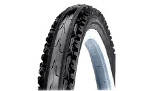 |
外 胎 |
原裝是 KENDA 26" X 1.75的外胎，因為背負重裝備騎乘，磨損的很快， 依路況的差異，估計四千～五千公里就磨的差不多了，得更換一次外胎。 備用的是帶VREDESTEIN的外胎，可以折疊方便我收納。 |
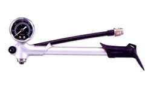 |
打 氣 筒 |
|
可以固定在車架上、附有氣壓表、還有個小腳踏可以放在地上輕鬆打氣。 常常都會需要將輪胎打飽氣，尤其是破胎換完之後 ~_~ 打飽氣的輪胎騎起來比較輕鬆，棒狀的打氣筒攜帶方便，也可以當武器用。 |
 |
水 壺 、 水 袋 |
水壺會攜帶三個650cc的放在車架上，還有一個3000cc的水袋。 這樣大概可以撐半天，視情況再補給水分，和多買些礦泉水瓶。 |
 |
工 具 組 |
 |
車 鎖 |
車在人在，是不變的道理。 絕對不要讓單車離開自己的身邊或是視線範圍，但還是帶個鎖，必要時鎖個心安也好。 |
 |
筆 記 型 電 腦 |
|
CPU : Core2Duo 1.83G 螢幕 : 13.3" 記憶體: 1GB DDR2 硬碟 : 160G 重量 : 2.0kg 電池8cell兩組、抗震包包、USB外接硬碟(80G)、變壓器。 |
 |
數 位 相 機 |
|
畫素 : 10.0M 螢幕 : 2.8" 鏡頭: Leica 記憶卡 : SD 重量 : 220g 電池兩組、原廠像機包、SD記憶卡 1GX3張 512MX1張、旅充。 |
 |
數 位 相 機 (備用) |
|
畫素 : 5.0M 螢幕 : 2.5" 鏡頭: Pentax 記憶卡 : SD 重量 :180g 電池兩組 小猴子像機包 記憶卡共用 座充 |
 |
MP3 隨 身 聽 |
|
顏色 : Black 容量 : 4GB 在蘋果電腦打工時的紀念品XD，裡面裝了米莎莎的歌。 |
 |
GPS 衛星記錄器 |
|
還沒有上市的WBT-201，由Wintec贊助一台，這次想將騎過的路徑完整的記錄起來。 所以就帶一台輕巧的軌跡記錄器同行，超省電跟超大容量的WBT-201就是首選！ |
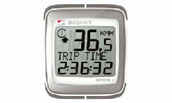 |
碼 表 |
|
台灣Sigma贊助的單車碼表，考慮到耗電性的問題，所以依舊選用有線的碼表。 我很喜歡Sigma的碼表，功能豐富而且使用簡單，整個就是我的菜～ |
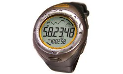 |
手 錶 |
|
功能：時間、高度計、溫度計、氣壓計、天氣預報、輪盤、碼表、防水、背光。 |
 |
手 機 、 國 際 SIM 卡 |
手機是隨便拿一隻GSM的，因為國際漫遊連接電話的我都要收費，很不划算。 所以中東友人Fei-Fei幫我弄了一張歐洲小國的SIM卡，這趟路線接電話都不用錢， 打給我的人也很便宜，一分鐘大約20元台幣。 |
 |
匯 率 計 算 機 |
崇淵送的，日本計算機，有上下兩個螢幕，可以簡單設定匯率， 然後轉換當地貨幣和新台幣，這樣旅行這麼多國家，就不用心算開銷到腦殘了 ~_~ |
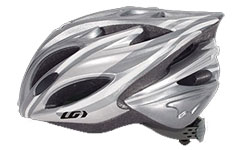 |
安 全 帽 |
|
銀色，大頭尺寸，戴起來還蠻輕的，每次騎車都被批評怎麼沒戴安全帽， 這次會乖一點戴在頭上，永保平安。重量 :297g |
 |
頭 巾 |
|
BUFF的魔術頭巾，平常就把頭包起來，檔太陽、防熱、清爽～ 起風沙的時候還可以把整個臉也包起來。像搶匪一樣 XD |
 |
太 陽 眼 鏡 |
|
型號 : T209 UV抗紫外線 : 400 備片三組: 黃色 增光 透明 |
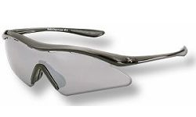 |
太 陽 眼 鏡 |
|
型號: T337 UV抗紫外線 : 400 備片三組: 灰水銀 黑色 增光 |
 |
手 套 |
|
矽膠材質的短手套，帶著手套看起來很酷 XD 一雙黑色、一雙紅色。 騎長時間的話，手握著單車把手也不會那麼痛，還可以拿來擦汗。 |
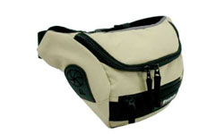 |
腰 包 |
|
貼身一點的行李，比如護照，要嘛就藏在行李的深處，要嘛就乾脆放在身上。 還有一些像是今日的生活費、糖果等東西，只要是希望隨手就能拿到，那都放這吧。 |
 |
排 汗 衣 |
Salewa Power Stretch
材質: Polartec 顏色: 灰 還有兩件是厚的，淺咖啡色，是藍駝胡大哥跟北極徒步旅行家河野兵市的特別款。 |
 |
風 衣 |
Heritage Gore Windstopper
藍色款，防風防水輕薄好穿，胡大哥送的， 重量:280公克。 |
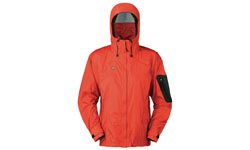 |
雨 衣 |
Epic Jacket
雨衣是MHW的番茄色款，透氣防水當然是基本的， 重量:380公克。 |
 |
雨 褲 |
Cloudveil Zorro Pant
雨褲是Clouddevil的黑色款， 重量:241公克。 |
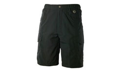 |
短 褲 |
|
不習慣穿車褲騎車，短褲休閒風格比較適合我啦 梨子牌，鐵灰色，長度快到膝蓋，穿起來很舒服 :D |
 |
透氣鞋 |
|
這次不穿卡鞋了，雖然騎起來比較輕鬆，但是騎久腳底板整個很痛 /_\ 換一雙透氣舒適的鞋子，長時間騎車腳也不會臭唷。 |
 |
藍 白 拖 |
藍白拖鞋之於我的旅行，是很重要而不可或缺的行李，在菜市場即可輕易入手。 它有像是國旗一般的本土象徵意義，以及整雙都是PU泡綿舒適好穿的特性。 那種，『藍白拖在腳，世界任我行』的感覺，穿過就會知道。 |
 |
排 汗 襪 |
FoxRiver 排汗快乾襪
透氣舒適的襪子，帶了兩雙可以交替著穿。 |
 |
露 宿 帳 |
Mountain Hardwear Ethereal Bivy
採用Gore-Tex XCR材質 重量:790公克。 跟睡袋和睡墊結合就變成了溫暖的過夜處了~ |
 |
睡 袋 |
捷峰
羽絨睡袋 可耐寒零下20度。可以全部打開變成棉被。很暖活。 2005年我要去環法的時候 Albula送我的 現在終於要派上用場了 |
 |
睡 墊 |
Dream Mema
如果睡在野地或是雪地的話。拿來鋪在地上能隔絕寒冷的侵襲。840公克。 這也是兩年前Albula送的 |
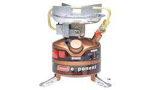 |
汽 化 爐 |
Coleman Exponent
型號: 422 重量: 680公克。汽油、去漬油兩用燃料。 |
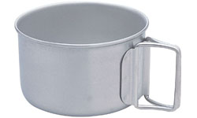 |
鍋 具 |
A&F country
因為是鈦金屬的鍋具，所以整個就是一個輕。同時也很貴~_~ 容量大約是一公升，可以讓我燒點熱開水煮泡麵或是泡可可亞喝。 |
 |
刀 具 |
|
刀與生活的崇淵送的一把折疊刀，，相當的漂亮，大小也符合我的手。 平常收起來的時候，還有一個設計可以拿來割繩子。 材質: AUS 8 重量: 102克 |
 |
國 旗 + BTP 旗 |
國旗是一定要帶的，視情況拿出來掛著，這面國旗是機車連的學弟，退伍時從連上拿的。 另一面是BTP的活動旗幟，平常也可以掛著，宣導一下環保理念。 |
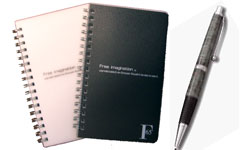 |
筆 、 筆記本 |
兩本65頁、36K的小筆記本，一黑一白，還有幾隻原子筆。 筆多帶幾隻，還可以送偏遠地區的人當禮物。 |
 |
哨 子 、 繩 子 、打 火 機、指南針 |
你永遠不會知道什麼時候會用到這些東西，或是根本就不會用到。 但還是帶在身邊，以免需要的時候，叫天不應、地也不靈。 |
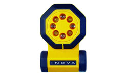 |
LED 手 電 筒 |
|
LED 多功能手電筒，可以閃光，強烈照明，緊急SOS訊號..等多種模式。 另附有帶子，可以掛於胸前或綁在車上、頭頂。 |
 |
延 長 線 & 插 頭 轉 換 器 |
三個插座的延長線，和MSI送的一組插頭轉換器。 |
 |
清 潔 、 盥 洗 用 品 |
快乾毛巾、肥皂、牙刷、牙膏、棉花棒、牙線、指甲刀、鑷子、鏡子。 這一張只是示意圖，我買不到那麼可愛的盥洗用品組合 ~_~ |
 |
個 人 藥 品 |
感冒藥、腸胃藥、抗生素、小護士、眼藥水、OK繃、類固醇、咳嗽藥、口罩、 護唇膏、防曬噴霧、肌樂、維他命、紅藥水。多謝銘龍的醫生弟弟幫我配藥。 |
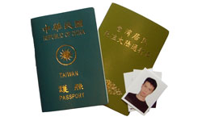 |
護 照 、 簽 證 、 照 片 、 文 件 |
台灣護照、台胞證、大頭照、緊急連絡人名單 哈薩克簽證、俄羅斯簽證、波蘭簽證、歐盟申根簽證。影本全部各一份。 |
 |
人 民 幣 、 信 用 卡 、 提 款 卡 |
現金只會攜帶人民幣，然後和信用卡以及提款卡混著使用。 旅行支票是個很麻煩的東西，很掙扎要不要買 ~_~ |
旅 遊 平 安 險 |
|
安泰人壽 2000萬旅遊平安險 OTA + OHS + MR 保險的規模還蠻大的，不僅理賠金額高、天數長（180天），而且還包含了 海外醫療、海外急難救助、而且保險證明對於辦簽證還挺有幫助。 |
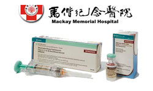 |
疫 苗 |
現在血液裡留著好幾種出發前去馬偕醫院注射的疫苗，包含： 狂犬病、A型肝炎、腦脊髓膜炎 |
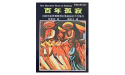 |
書 籍 |
旅行帶本書，雖然顯得笨重，但實用性遠遠超乎想像。 一個人在他鄉，可以帶一本自己喜歡的書，任何時候都可以投入書中，換一個心情。 這次帶的是新潮文庫的百年孤寂，大概四年前看完過一次，真是本超好看的書！ |
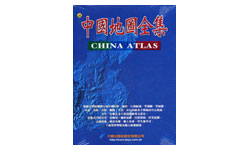 |
地 圖 |
大輿出版社的中國地圖，共160頁，有省為單位的大地圖，也有主要城市的市區地圖。 除了地圖之外，也有詳細的文字資料，包含人文、地形、天候、景點等資料。 |
 |
乾 糧 |
氣化爐跟鍋子都帶了，那要煮些什麼呢？ 這次會帶基本的像是維力炸醬麵和雀巢美祿三合一。 燒點開水就可以自己煮點東西或泡杯可可來喝。其他糧食就路上再邊買邊吃。 |
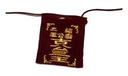 |
平 安 符 |
我阿姨幫我去二結王公廟求的平安符 :) 我會平平安安回來的。 |
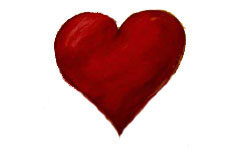 |
心 |
雖然是老梗了，但是！ 只要有心，人人都可以是....... |